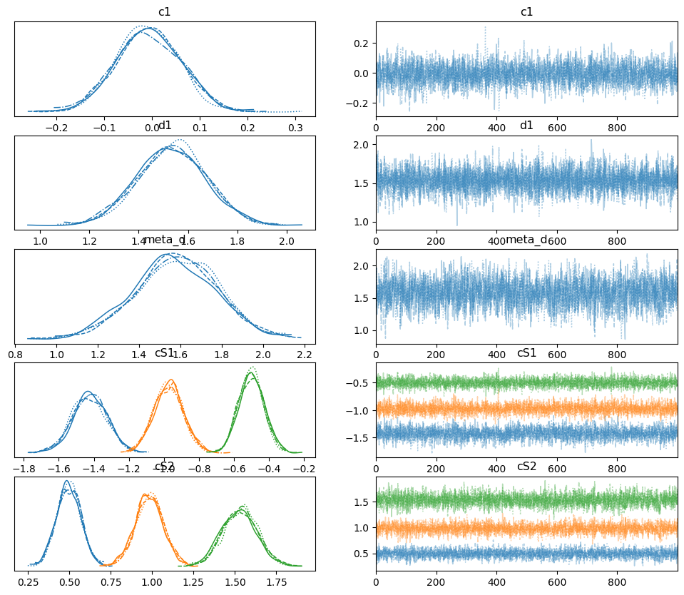

Fitting single subject data using Bayesian estimation#
Author: Nicolas Legrand nicolas.legrand@cfin.au.dk
%%capture
import sys
if 'google.colab' in sys.modules:
! pip install metadpy
import arviz as az
import numpy as np
from metadpy.bayesian import hmetad
From response-signal arrays#
# Create responses data
nR_S1 = np.array([52, 32, 35, 37, 26, 12, 4, 2])
nR_S2 = np.array([2, 5, 15, 22, 33, 38, 40, 45])
This function will return two variable. The first one is a pymc model variable
model, traces = hmetad(nR_S1=nR_S1, nR_S2=nR_S2)
Auto-assigning NUTS sampler...
Initializing NUTS using jitter+adapt_diag...
Sequential sampling (4 chains in 1 job)
NUTS: [c1, d1, meta_d, cS1_hn, cS2_hn]
100.00% [2000/2000 00:18<00:00 Sampling chain 0, 0 divergences]
100.00% [2000/2000 00:18<00:00 Sampling chain 1, 0 divergences]
100.00% [2000/2000 00:18<00:00 Sampling chain 2, 0 divergences]
100.00% [2000/2000 00:18<00:00 Sampling chain 3, 0 divergences]
Sampling 4 chains for 1_000 tune and 1_000 draw iterations (4_000 + 4_000 draws total) took 74 seconds.
The rhat statistic is larger than 1.01 for some parameters. This indicates problems during sampling. See https://arxiv.org/abs/1903.08008 for details
The effective sample size per chain is smaller than 100 for some parameters. A higher number is needed for reliable rhat and ess computation. See https://arxiv.org/abs/1903.08008 for details
az.plot_trace(traces, var_names=["c1", "d1", "meta_d", "cS1", "cS2"]);

az.summary(traces, var_names=["c1", "d1", "meta_d", "cS1", "cS2"])
| mean | sd | hdi_3% | hdi_97% | mcse_mean | mcse_sd | ess_bulk | ess_tail | r_hat | |
|---|---|---|---|---|---|---|---|---|---|
| c1 | -0.008 | 0.067 | -0.126 | 0.122 | 0.001 | 0.001 | 2740.0 | 2849.0 | 1.0 |
| d1 | 1.535 | 0.139 | 1.289 | 1.813 | 0.002 | 0.001 | 5295.0 | 2554.0 | 1.0 |
| meta_d | 1.579 | 0.199 | 1.189 | 1.935 | 0.004 | 0.003 | 2502.0 | 2864.0 | 1.0 |
| cS1[0] | -1.424 | 0.098 | -1.607 | -1.237 | 0.002 | 0.001 | 2977.0 | 2995.0 | 1.0 |
| cS1[1] | -0.973 | 0.083 | -1.139 | -0.824 | 0.001 | 0.001 | 3491.0 | 3090.0 | 1.0 |
| cS1[2] | -0.501 | 0.071 | -0.634 | -0.369 | 0.001 | 0.001 | 4122.0 | 2914.0 | 1.0 |
| cS2[0] | 0.497 | 0.073 | 0.356 | 0.628 | 0.001 | 0.001 | 4178.0 | 3135.0 | 1.0 |
| cS2[1] | 0.984 | 0.085 | 0.826 | 1.148 | 0.002 | 0.001 | 3181.0 | 3165.0 | 1.0 |
| cS2[2] | 1.530 | 0.105 | 1.342 | 1.735 | 0.002 | 0.001 | 3246.0 | 2771.0 | 1.0 |
Watermark#
%load_ext watermark
%watermark -n -u -v -iv -w -p metadpy,pytensor,pymc
Last updated: Wed Mar 22 2023
Python implementation: CPython
Python version : 3.9.16
IPython version : 8.11.0
metadpy : 0.1.0
pytensor: 2.10.1
pymc : 5.1.2
numpy: 1.23.5
arviz: 0.15.1
sys : 3.9.16 (main, Dec 8 2022, 11:01:53)
[GCC 11.3.0]
Watermark: 2.3.1